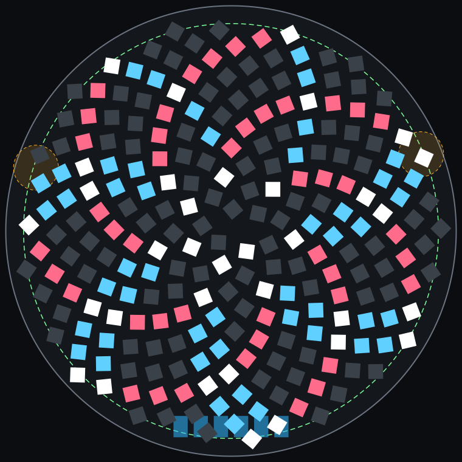
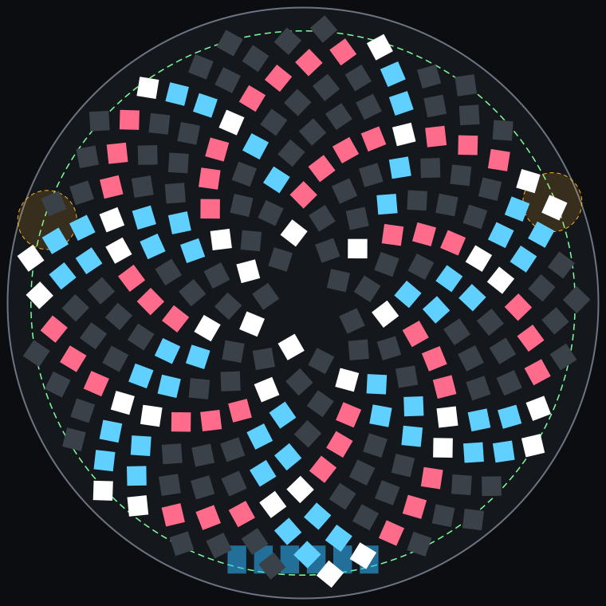
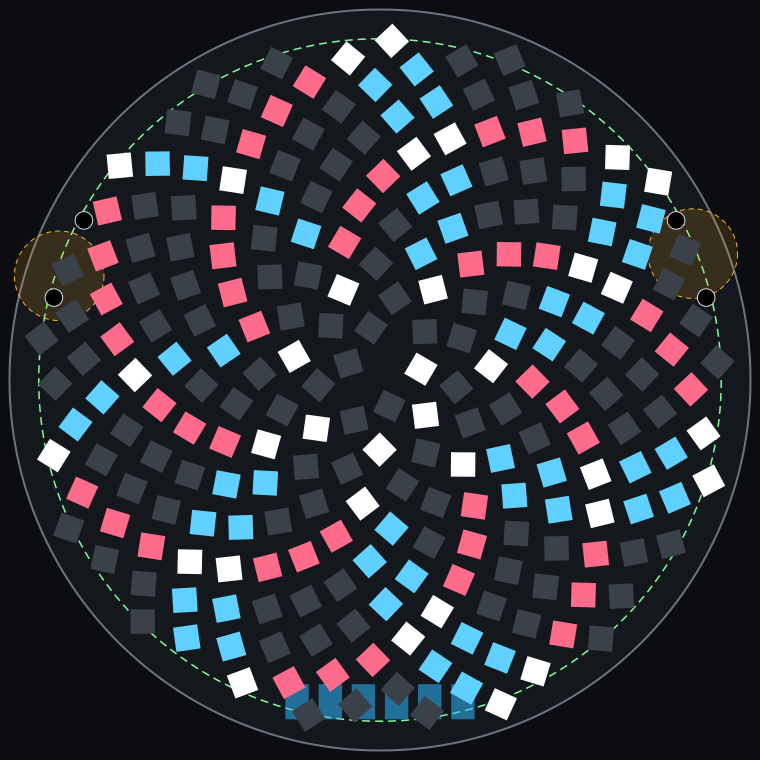
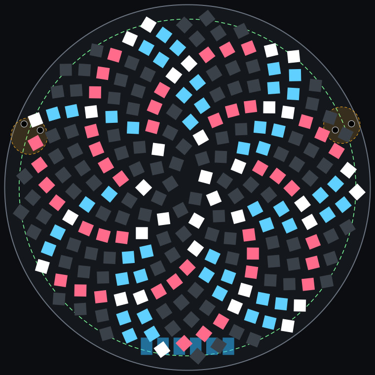
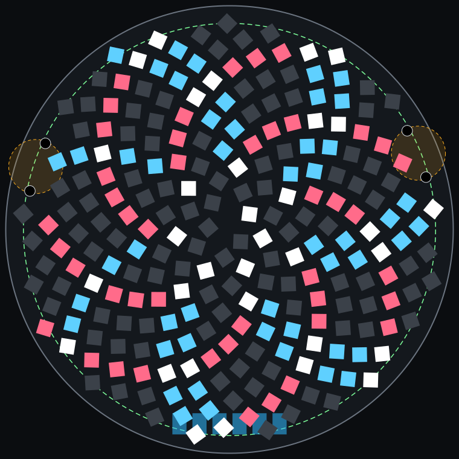

Turned sunflower, 38 mm, USB-C off the board
A study only: the board in hw/ is unchanged. Seen from the LED side, with back-side parts drawn through the board. USB pads and buttons show rough positions, not placements. Gaps come from a geometry model, and nothing has been routed.
one windopposing windbothother LEDsthrough-holeUSB pads, backbutton, backcell, back
| Plan | Holes in LED side | LEDs | Min pitch, mm | Min pad gap, mm | Clear centre, mm across | Peg hole to LED, mm |
|---|---|---|---|---|---|---|
| No holes, smallest centre gap | 0 | 234 | 1.90 | 0.36 | 1.1 | |
| No holes, wider pad gaps, larger centre gap | 0 | 234 | 1.91 | 0.46 | 3.1 | |
| Current buttons, pegs between the LEDs | 4 | 234 | 1.90 | 0.36 | 1.1 | 0.18 |
| EVQP7C01P, pegs between the LEDs | 4 | 234 | 1.90 | 0.36 | 1.1 | 0.21 |
| Current buttons, LEDs kept 0.6 mm from pegs | 4 | 234 | 1.88 | 0.34 | 1.0 |


Tightest pad gap 0.36 mm, clear centre 1.1 mm across.


Tightest pad gap 0.46 mm, clear centre 3.1 mm across.


Tightest pad gap 0.36 mm, clear centre 1.1 mm across.


Tightest pad gap 0.36 mm, clear centre 1.1 mm across.


Tightest pad gap 0.34 mm, clear centre 1.0 mm across.